نفس الشاشات التلاتة ونفس البيانات بشكلين مختلفين، على آيفون Pro Max بالوضع الفاتح والغامق. الشاشة معروضة كاملة بالتمرير. كل اتجاه بيشتغل بأي لون هوية يختاره المدرب، وآخر صف بيوري الرئيسية بلون تاني.
في انتظار اختياركزي دفتر المدرب الشخصي بس متنظّم: خلفية لون الورق، خطوط رفيعة بتفصل بدل الكروت، وعناوين بخط نسخ فيه روح وشخصية. لون الهوية بيظهر في حاجات قليلة ومهمة: الحصة الجاية والزرار الأساسي والتبويب الحالي. البحث وزرار الإضافة تحت عند الصباع. هادي ومحترم ومريح للعين، والأرقام مرصوصة زي جدول حسابات.
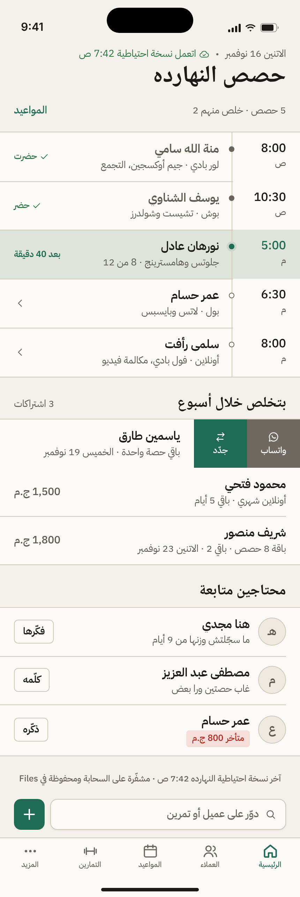
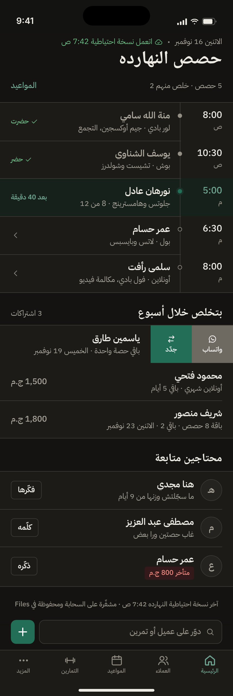
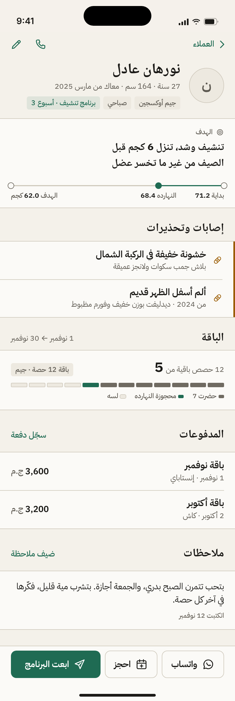
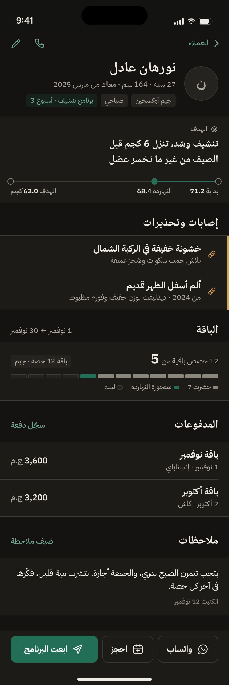
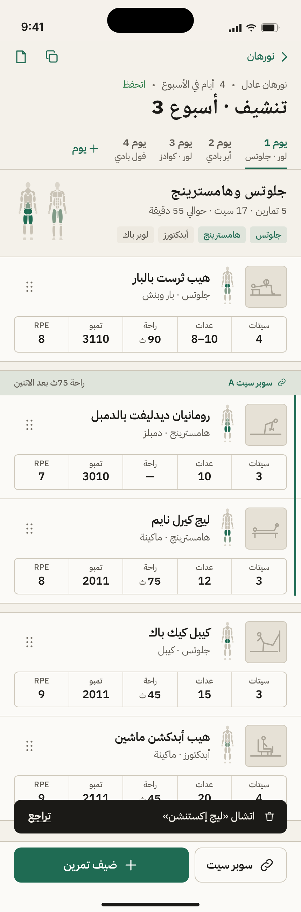
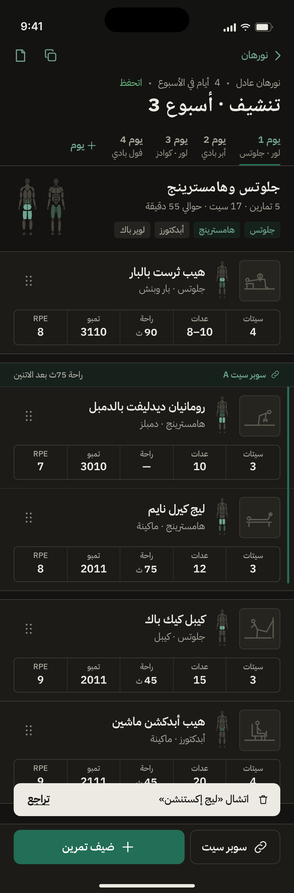
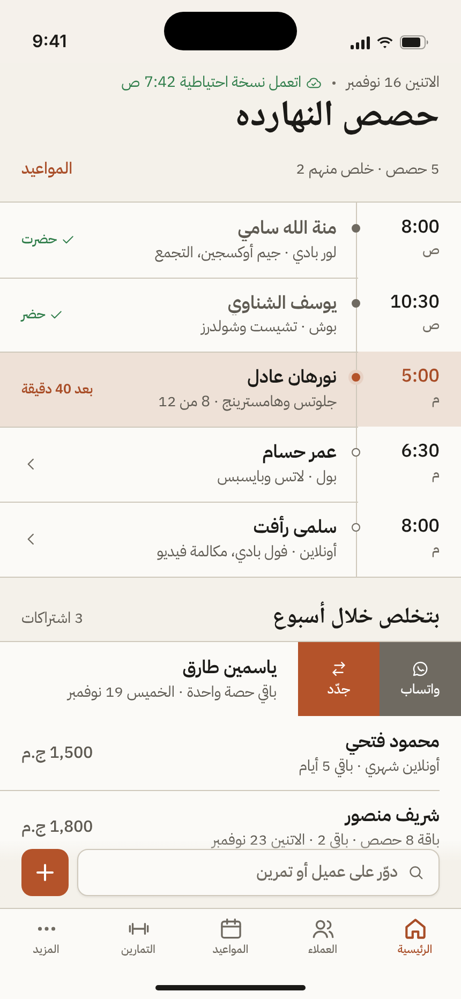
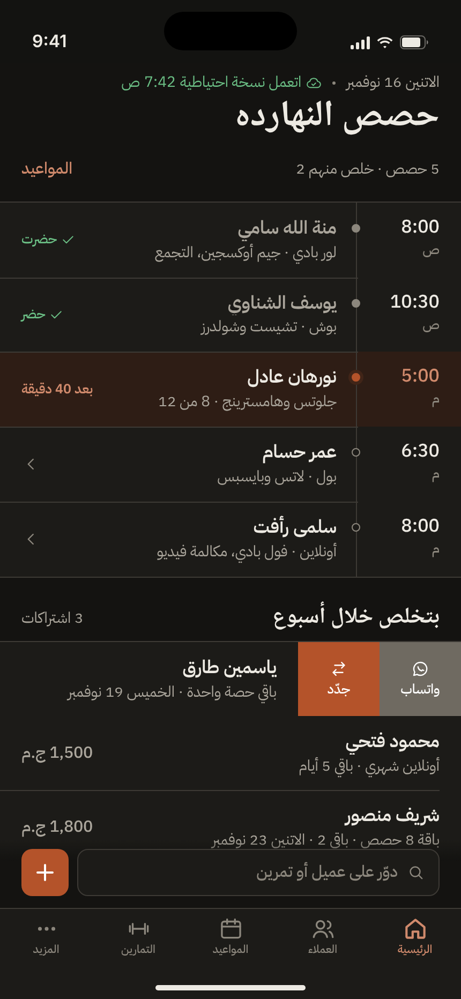
روح صالة الجيم: خط عناوين عريض وتقيل، وأرقام كبيرة بس لما يكون ليها معنى زي ميعاد الحصة الجاية وعدد الحصص الباقية. لون الهوية بيتحط بجرأة على الحصة الجاية واليوم المختار والزرار الأساسي. صور التمارين أكبر وعليها خريطة العضلة. زرار الإضافة في نص شريط التبويبات. واضح وسريع وبيتقري من بعيد، ومعمول للاستعمال بين السيتات.
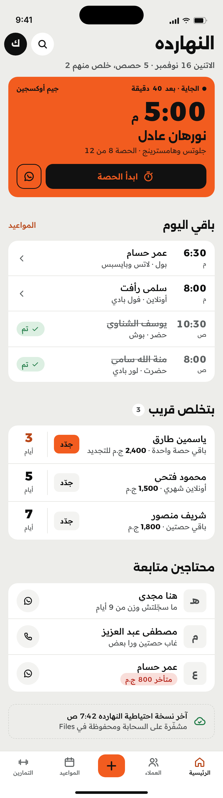
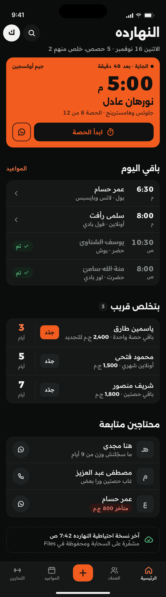
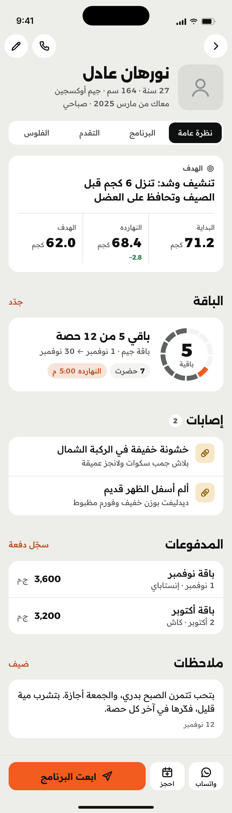
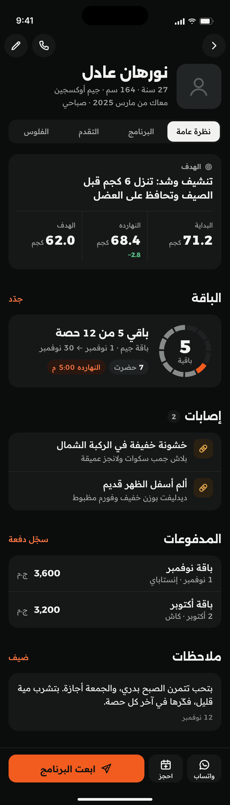
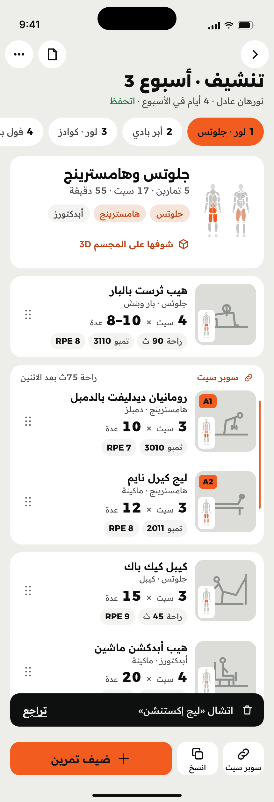
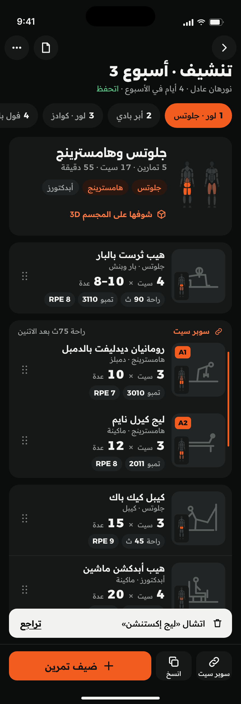
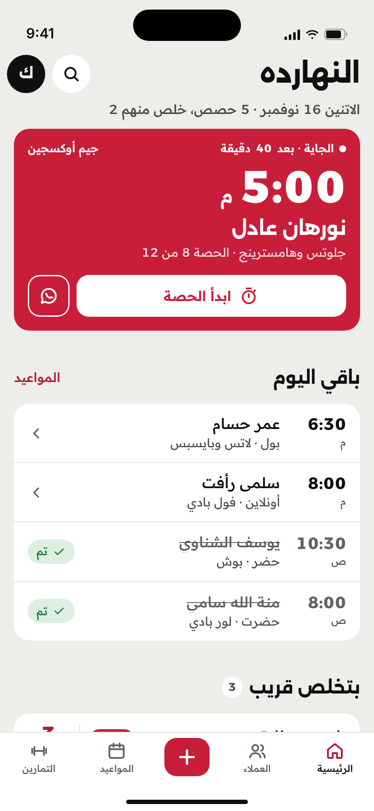
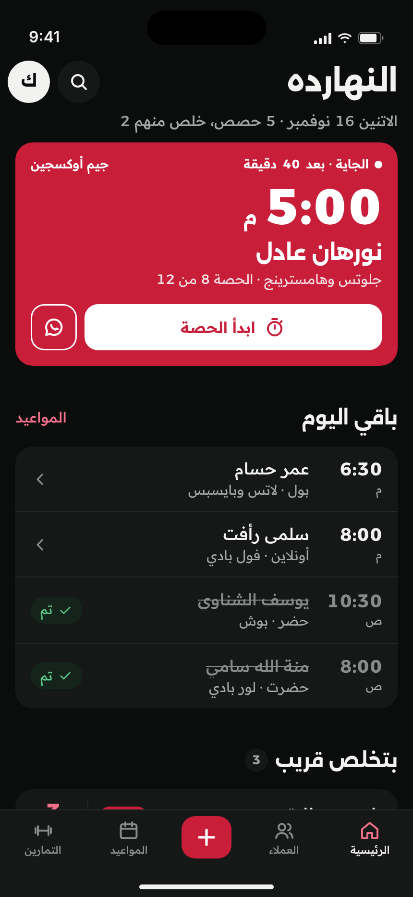